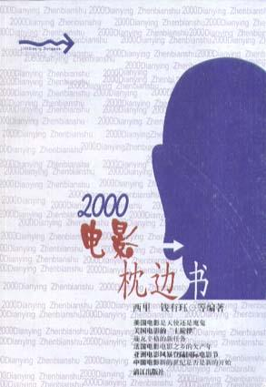

哈利·波特与魔法石

总体观点
《哈利·波特与魔法石》（Harry Potter and the Philosopher's Stone）是英国作家J.K.罗琳开启全球流行文化奇迹的划时代长篇奇幻小说。小说巧妙融合了维多利亚时代英国寄宿学校小说的传统叙事与欧洲中世纪古老巫术神话，为全球数亿读者构筑了一个与麻瓜工业现实并存但法则森严、充满无限惊奇的当代魔法世界。
作品的核心绝非单纯炫耀飞天扫帚、变形术或巧克力蛙的新奇，而是探讨被爱与善念所庇护的弱小灵魂如何直面世俗的排挤与终极恶念。哈利自幼在姨妈家的楼梯下碗橱饱受虐待与歧视，但他未曾堕入愤世嫉俗的深渊；当他来到霍格沃茨，面对诱惑长生与无尽财富的魔法石，他与罗恩、赫敏展现出了牺牲、智慧与纯粹的守护之心。罗琳通过邓布利多的箴言揭示了全书至高的伦理底色：决定我们成为什么样人的，不是我们的能力，而是我们的选择；而母亲莉莉留给哈利抵御伏地魔至死诅咒的，正是世间最古老、最不可战胜的力量——纯粹的母爱。
核心观点
-
1. 平凡边缘人到天选之子的身份转变与心理适应
在麻瓜世界被欺凌无视的孤儿，在魔法世界却是人尽皆知的大难不死救世主，这种巨大落差构成了成长叙事的原动力。
十一岁生日前夜在荒岛礁石破屋中，海格撞破木门送来被压扁的生日蛋糕并宣布‘你是一名巫师’，瞬间撕裂了平凡暗淡的过去。 -
2. 厄里斯魔镜的心灵投影：欲望诱惑与现实清醒
镜子展现的不是现实容貌，而是观者内心深处最迫切、最强烈的渴望，过度沉溺于幻象将导致意志消沉与现实崩塌。
哈利在魔镜前通宵流连凝视从未谋面的双亲与族人，邓布利多告诫他‘沉湎于虚幻的梦想而忘记现实的生活，这是毫无益处的’。 -
3. 选择高于能力：分院帽与道德自主性
人的本质不由天赋潜质或血统标签决定，关键在于面临道德十字路口时自主作出的价值抉择。
分院帽极力建议哈利去斯莱特林学院成就伟大霸业，但哈利在心中拼命默念‘不去斯莱特林’，最终被分入格兰芬多。 -
4. 爱的古老魔咒：对抗纯粹暴力的终极护盾
母亲以生命为代价构筑的牺牲之爱，在哈利的血脉中化作了不可摧毁的肉身护盾，任何邪恶残暴之手触之即化为飞灰。
被伏地魔附身的奇洛企图掐死哈利夺取魔法石时，其双手一触碰到哈利的皮肤便如遇烈火灼烧般剧烈溃烂起泡并迅速崩解。 -
5. 规则突破与集体正义的道德抉择
真正的道德勇气有时需要打破墨守成规的教条，为了保护同伴与捍卫正义原则勇于承担越轨风险。
哈利、罗恩与赫敏违抗校规夜闯活板门保护魔法石，邓布利多最终肯定了其基于道义责任的冒险并给予关键学院分。
全书结构
-
大难不死的男孩与碗橱岁月
交代伏地魔肆虐巫师界惨遭反弹覆灭的前史，哈利被寄养在刻薄的德思礼一家，在碗橱中度过暗无天日的童年。
成千上万封来自霍格沃茨的录取信如暴风雪般塞满壁炉与信箱，弗农姨父精神崩溃带着全家逃往暴风雨中的海岛孤礁。 -
破釜酒吧与对角巷的魔幻启蒙
巨人海格强行接走哈利，带领其穿过破釜酒吧的垃圾桶后墙进入对角巷，在古灵阁取钱并在奥利凡德魔杖店选中孪生羽毛魔杖。
奥利凡德告知哈利：‘魔杖选择巫师……而另一根含有同一只凤凰羽毛的魔杖，正是给你留下那道伤疤的那根。’ -
九又四分之三站台与霍格沃茨特快
哈利在国王十字车站穿墙撞入隐藏站台，在红色蒸汽火车上初遇吃斑斑老鼠的罗恩与背诵魔法史的赫敏，结成牢不可破铁三角。
哈利买空餐车上的所有零食与罗恩分享比比多味豆和巧克力蛙，第一次感受到了被平等对待的同龄温情。 -
分院仪式、魁地奇天才与魔药课刁难
新生戴上分院帽入选学院，斯内普在魔药课上严苛训斥哈利，飞行课上哈利展现惊人天赋被麦格教授破格选为百年难遇的搜捕手。
万圣节巨怪闯入地牢女厕所，哈利与罗恩冒死冲入击晕巨怪救出赫敏，三人从互看不顺眼正式成为生死与共的密友。 -
夜闯活板门、巨型巫师棋与最终决战
三人跨越三头犬、魔鬼网、会飞的钥匙与致命巫师棋盘，哈利孤身进入密室揭穿奇洛的双面人秘密，凭借母爱之血粉碎伏地魔附体阴谋。
罗恩以自我牺牲为代价指引白棋战胜黑色王后；哈利从厄里斯魔镜口袋中掏出魔法石，触摸奇洛使其化为焦炭尘埃。